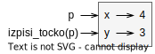

Licenca
To delo je na voljo pod pogoji slovenske licence Creative Commons 2.5:
priznanje avtorstva - nekomercialno - deljenje pod enakimi pogoji.
Celotna licenca je na voljo na spletu na naslovu http://creativecommons.org/licenses/by-nc-sa/2.5/si/. V skladu s to licenco je dovoljeno vsakemu uporabniku delo razmnoževati, distribuirati, javno priobčevati, dajati v najem in tudi predelovati, vendar samo v nekomercialne namene in ob pogoju, da navede avtorja oziroma avtorje in izdajatelja tega dela. Če uporabnik delo predela, kar pomeni, da ga spremeni, preoblikuje, prevede ali uporabi to delo v svojem delu, lahko predelavo dela ponudi na voljo le pod pogoji, ki so enaki pogojem iz te licence oziroma pod enako licenco.

Objekti kot argumenti
Objekte lahko uporabimo kot argumente funkcij na čisto običajen način, ki smo ga vajeni. Pri tem ne smemo pozabiti, da spremenljivka vsebuje samo sklic na dejanski objekt. Če torej spremenljivko kot argument posredujemo neki funkciji, to ustvari le nov sklic. Tako obe – spremenljivka in funkcija – vsebujeta sklica na objekt, ki pa je en sam.

Oglejmo si primer enostavne funkcije, ki vključuje objekt Tocka:
def izpisi_tocko(t):
print("(" + str(t.x) + ", " + str(t.y) + ")")
Funkcija izpisi_tocko kot argument vzame oziroma sprejme objekt Tocka in oblikuje izpis na kateri koli način, ki ga izberemo oziroma določimo. Če funkcijo izpisi_tocko(p) pokličemo s točko p, ki smo jo definirali prej, bo izpis funkcije enak (4, 3).
Ustrezno dokumentiranje izvorne kode je zelo pomembno, zato je priporočena uporaba dokumentacijskih nizov (ang. documentation strings – docstrings), ki so priročen način povezovanja dokumentacije z moduli, funkcijami, razredi in metodami.
Dokumentacijske nize uporabljamo za dokumentiranje določenih delov izvorne kode, podobno kot uporabljamo običajne komentarje. Za razliko od običajnih komentarjev mora dokumentacijski niz opisovati, kaj funkcija počne in ne, kako to počne.